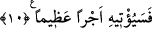

kaçırmasınlar diye O (s.a.)’nu uyarıcı olarak nitelemiştir. Nitekim daha önceki
ümmetler bu hususta çok şey kaçırmışlardı.
Kemâl Hucendî şöyle demiştir: “İnsan iki âlemden de yüzünü Allah’a
döndürmedikçe, bütün âlemlerin güzîdesi Hz. Muhammed Mustafa (s.a.) gibi olamaz.”
Cenab-ı Hakk’tan, ona (s.a.) yönelme ve onun yanında bulunma nimetlerinden bizleri
bol bol nasibdâr etmesini niyaz ederiz.
10. Muhakkak ki sana biat edenler ancak Allah’a biat etmektedirler. Allah’ın eli
onların ellerinin üzerindedir. Kim ahdini bozarsa, ancak kendi aleyhine bozmuş olur.
Kim de Allah ile olan ahdine vefa gösterirse Allah ona büyük bir mükâfat
verecektir.
“O ağacın altında Kureyş’le savaşacaklarına dâir sana söz verenler var ya, doğrusu
onlar Hudeybiye’de seninle bey‘at ediyorlar,” demektir. Bu âyet-i kerîmede söz verme
hâdisesi, bir mal karşılığında bir mal satın alma mânâsına gelen “mubâyaa”
kelimesiyle ifâde edilmiştir. Çünkü gerçekten de burada bir mübâdele, bir şeyi bir şeyle
değişme anlamı vardır. Şöyle ki: Mü’minler, Peygamber (s.a.)’e itâat edeceklerine ve
müşriklerle savaşma esnâsında sebât edeceklerine söz veriyorlar, Peygamber (s.a.) de
onlara sevap ve Allah’ın rızasını vaad ediyordu.
Akabe bey’atı yapıldığı bir sırada Ensâr’dan birisi: “Ya Rasûlallah konuş, kendin ve
Rabbin için ne istiyorsan iste!” dedi.
Peygamberimiz (s.a.) de: “Rabbim için, O’na kulluk etmenizi ve O’na ortak
koşmamanızı şart koşuyorum. Kendim için de, kendinizi, çocuklarınızı ve
hanımlarınızı koruduğunuz bütün şeylere karşı beni de korumanızı şart koşuyorum.”
buyurdu.
Abdullah bin Ravâha (r.a.):
“– Bunları yaptığımız takdirde bize ne var yâ Rasûlullah!” dedi. Efendimiz (s.a.) de:
“– Sizin için Cennet var” buyurdu. Bunun üzerine hep beraber:
“– Kazançlı bir alış-veriş, bunu bozmuyoruz, bozmak da istemiyoruz.” dediler.
“Sana bey’at eden kişi, sanki Allah’a bey’at etmiş gibidir.”
Onlar cennet karşılığında canlarını Allah’a sattılar. Nitekim Allah Teâlâ bir başka
âyet-i kerîme’de: “Cenneti onlara verme karşılığında Allah (c.c.) onların canlarını
ve mallarını satın aldı.” (Tevbe, 9/111) buyurmuştur. Gerçekten de böyledir. Çünkü